Video Editor — help
Everything runs in your browser. Your videos, photos and recordings are never uploaded: they are opened on this device, and the finished video is made on this device.
Getting started
- Import video, audio and pictures with the Import button, or drop files anywhere on the page.
- Double-click a file (or drag it onto a track) to put it on the timeline.
- Press Space to play. Click the ruler to move the playhead.
- Press Export to make the video file.
Choose the frame at the top: 16:9 for YouTube, 9:16 for Reels, Shorts and TikTok, 1:1 or 4:5 for feeds. You can change it at any time.
The menus
Everything is in the menu bar at the top right, next to Export. Point at one menu and then at the next to look through them, or use the arrow keys.
| File | New project, new tab, open and save a project file, My projects, import media, save the frame as a picture, export. |
| Edit | Undo and redo, cut, copy, paste, duplicate, split, delete, select all, markers, a transition on every cut, YouTube chapters. |
| View | Preview size, expand the preview, hide the side panels, frame size (16:9, 9:16, square…), fit the timeline, snapping. |
| Create | Titles and handwriting, drawing, Qur’ān, hadith, nasheed and occasion videos, templates, stickers and backgrounds, recording, Read aloud, the sound library, pictures on the pauses, brand kit and Shorts. |
| Tools | Captions and subtitles, auto-reframe, resizing for social media, background removal, and the other tools. |
| Help | This guide, keyboard shortcuts and About. |
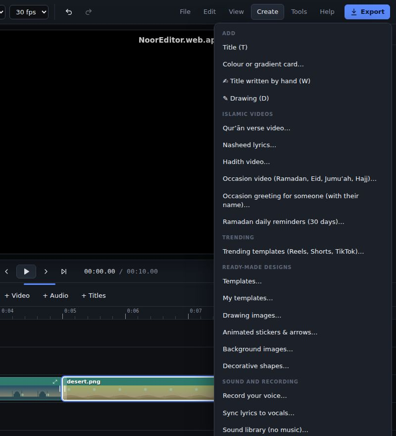
On a phone, + is the Create menu and ☰ holds File, Edit, View, Tools and Help.
Step-by-step tutorials
Follow along with the editor open in another tab. Every picture below is the real editor.
- Your first video in five minutes
- A slideshow that changes on every pause
- Captions in Afaan Oromoo, Amharic and Somali
- A Qur’ān video with each word lit up
- A title written by hand
- Draw on your video
- An event poster from a template
- Your brand on a Short
- A Ramadan, Eid, Jumu‘ah or Hajj video
- Read aloud: a voice-over from your text
- A Qur’ān video with a new background each āyah
- Keep the speaker in a tall Short (auto-reframe)
- Editing on your phone
1. Your first video in five minutes
You need: a few photos or clips, and a voice or nasheed.
- Press Import (top left) and choose your photos and sound — or drop them on the page. They appear under Media.
- Double-click each photo to put it on the timeline, one after another. Each photo gets a gentle fade and zoom by itself.
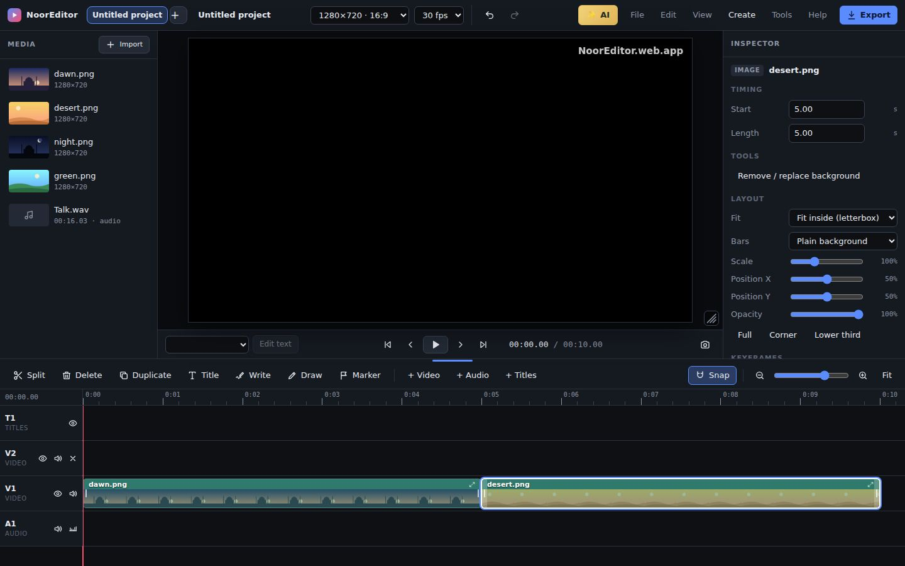
- Double-click the sound too: it goes on the audio track A1, where you can see its waveform.
- Move the red playhead to where the title should appear and press Title (or T). Type your words straight away; change the font, size and colour on the right.
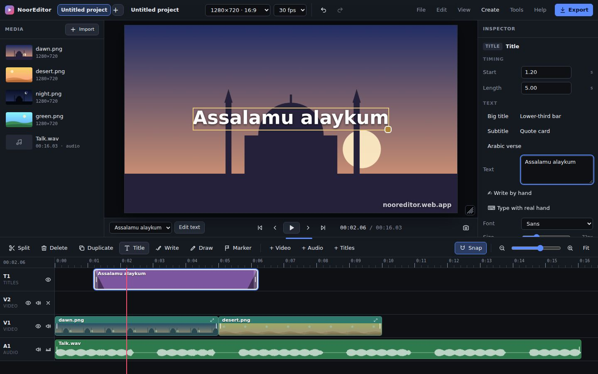
- Press Space to watch it. Drag the ends of a clip to make it longer or shorter.
- Press Export, choose the quality and press Export again. The video is made on your device and saved to your downloads.
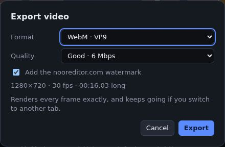
2. A slideshow that changes on every pause
Great for recitations, nasheeds and short reminders.
- Put the recitation or talk on the timeline and click it once to select it.
- Open Create ▸ Pictures on the pauses & jump cuts. The editor listens to the voice and says how many pauses it found.
- Tick the photos to use (add more with Add photos), choose a transition, and set Shortest scene so the pictures do not change too fast.
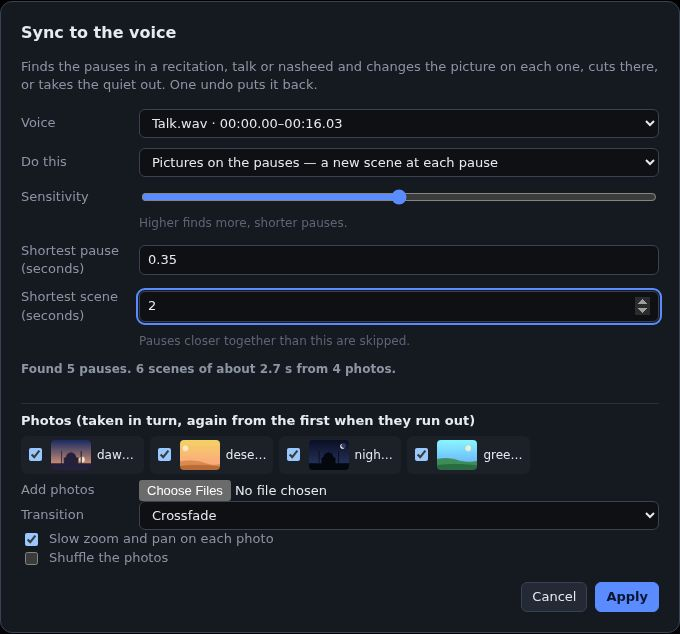
- Press Apply. The photos go on a new track, each one changing in a pause, with a slow zoom and a crossfade. One Ctrl+Z takes them all off again.
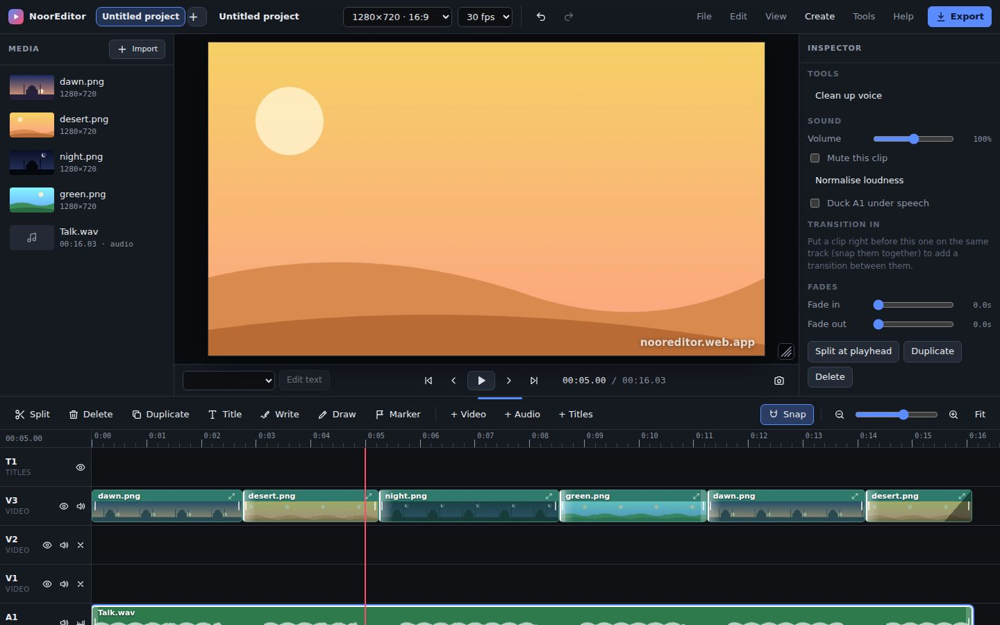
The same window can also cut a clip at each pause, remove the pauses (jump cuts, for talks and lessons), or add a marker at each one.
3. Captions in Afaan Oromoo, Amharic and Somali
Everything happens on your device — nothing is uploaded.
- Select the clip with the voice, then open Tools ▸ Auto captions.
- Choose Afaan Oromoo as the language. The speech recogniser does not know Oromo yet, so a box opens: paste or type what is said, one sentence per line.
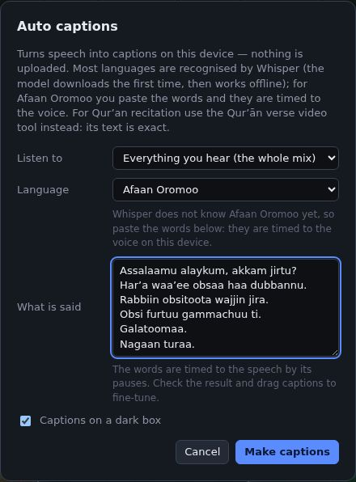
- Press Make captions. Each line becomes a caption on a new Captions track, starting where its phrase starts.
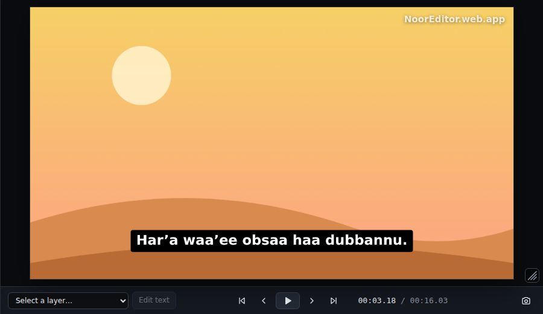
- For Amharic or Somali, choose the language and the editor picks the Most accurate model, which writes the words for you (it downloads once, about 250 MB). If a word comes out wrong, click the caption and fix it — or use Tools ▸ Timed captions from your text and paste the correct words.
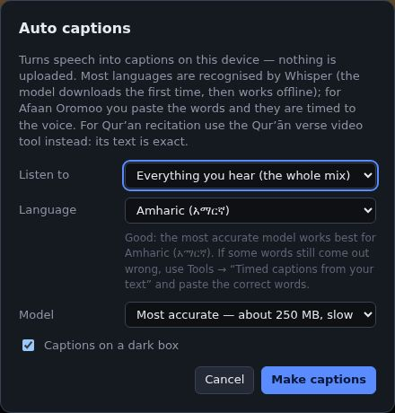
Tip: drag a caption’s ends on the timeline to fine-tune it, and use Tools ▸ Save a titles track as subtitles to get an .srt file for YouTube.
4. A Qur’ān video with each word lit up
- Open Create ▸ Qur’ān verse video.
- Choose the sūrah, the first and last āyah, the reciter and a translation (Afaan Oromoo, Amharic, Somali and many more).
- Tick Highlight each word as it is recited, then press Make video.
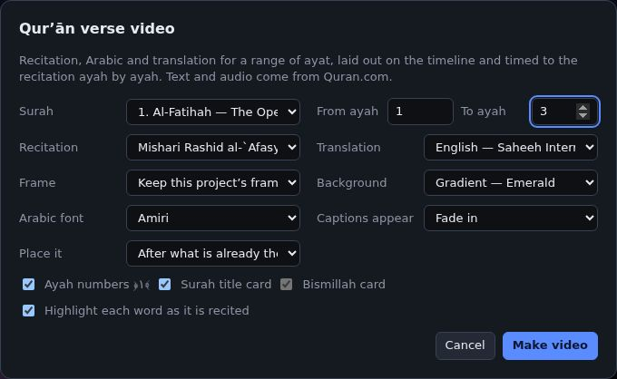
The recitation, the Arabic and the translation are placed āyah by āyah, and the word being recited glows gold.
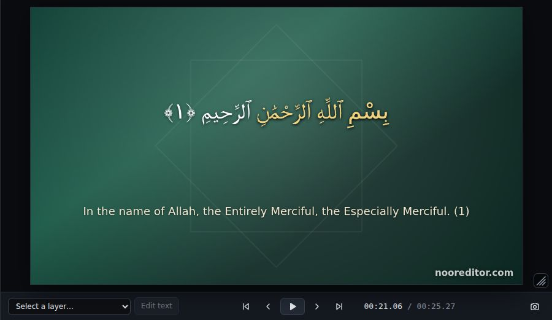
5. A title written by hand
- Move the playhead and press Write (or W) under the picture, then type your words.
- Play it: a hand writes the words out. On the right choose the hand (real, emoji ✍️ or sketch), its size and skin colour, the pen colour and how long the writing takes.
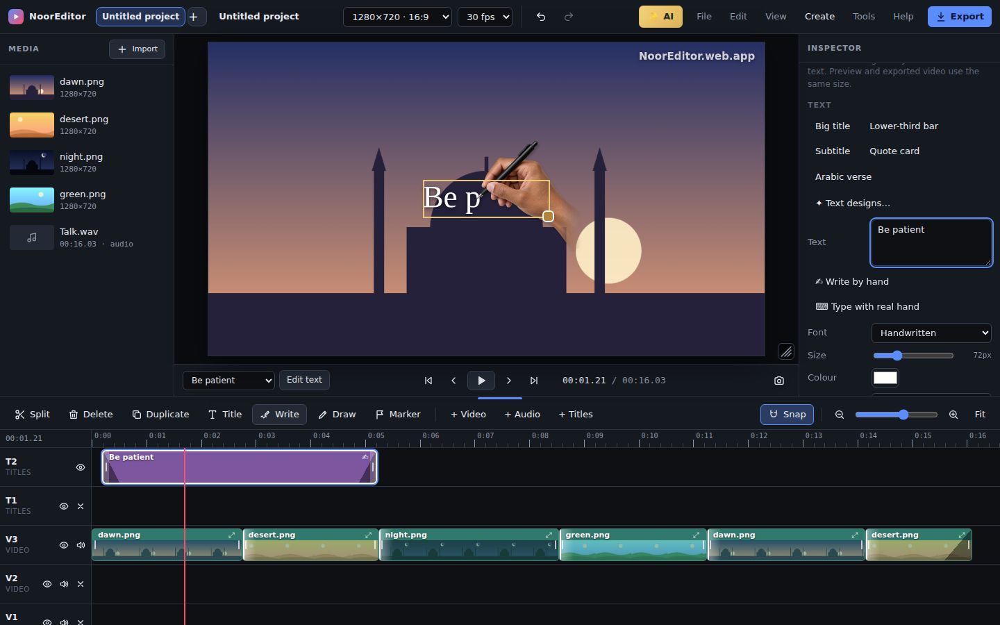
6. Draw on your video
- Press Draw (or D). The picture gets bigger and a drawing bar appears above it.
- Choose a pen, line, arrow, box or circle, a colour and a size, and draw with the mouse or your finger.
- Press Done. The drawing becomes a clip on the timeline and, when you play, a hand draws it line by line.
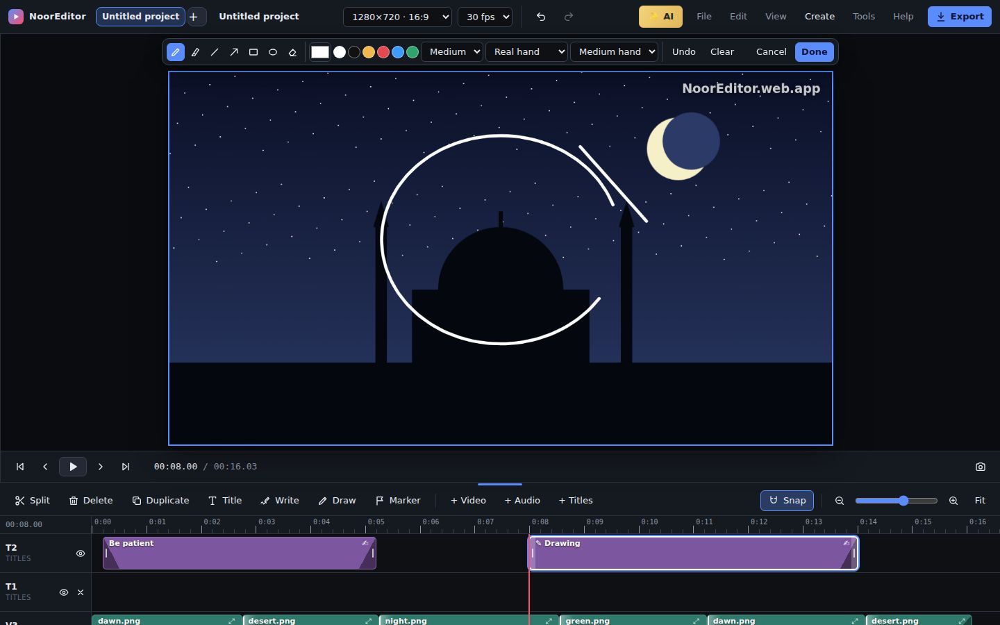
7. An event poster from a template
- Open Create ▸ Templates and pick one — a lecture, halaqa, Ramadan reminder, Zoom class and many more.
- Fill in the title, speaker, date and place underneath, choose the format (video, poster or story) and press Use template.
- Everything it adds can be edited like any other clip.
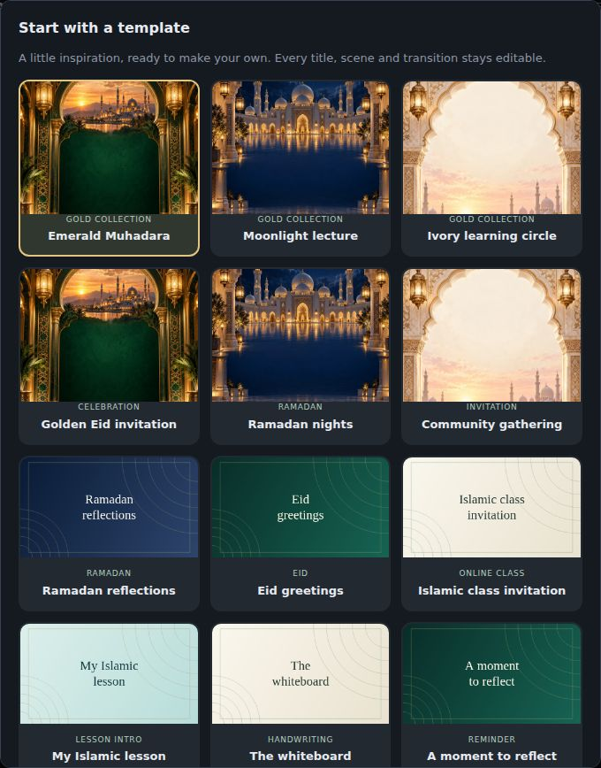
8. Your brand on a Short
- Open Create ▸ Brand kit, add your logo, colours, font and intro words, and press Save kit. Use Save and apply to put your logo on this video too.
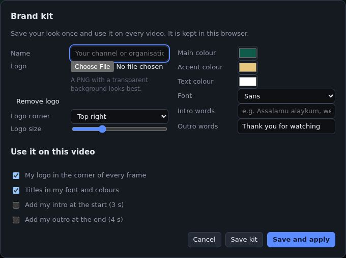
- Open Create ▸ Make a Short, choose the part of the video (up to 3 minutes), type a big title, and press Make Short.
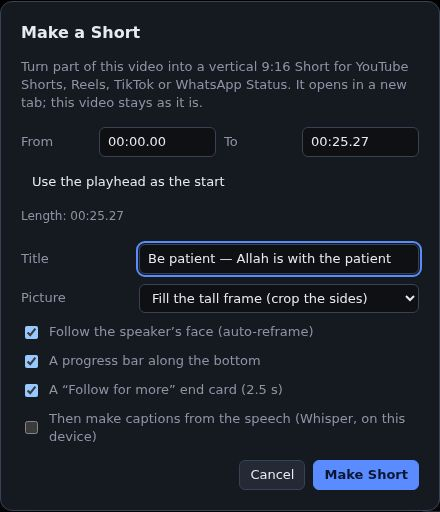
- The vertical 9:16 Short opens in a new tab with the title on top, a progress bar and a “Follow for more” end card. Your original video is left as it was.
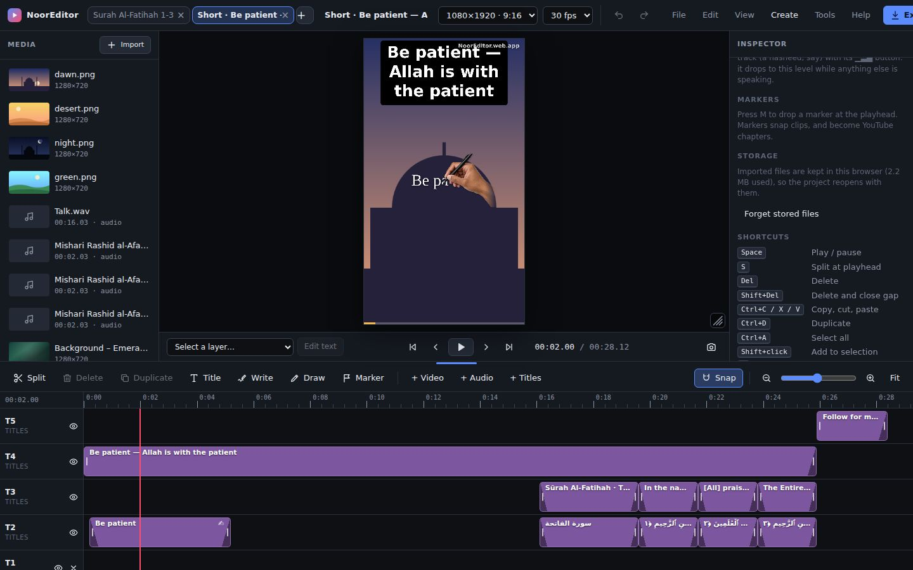
9. A Ramadan, Eid, Jumu‘ah or Hajj video
No photos needed: the scenes are painted on your device.
- Put a recitation or nasheed on the timeline (or skip this — then each scene stays four seconds).
- Open Create ▸ Occasion video and choose the occasion: Ramadan, Eid al-Fitr, Eid al-Adha, Jumu‘ah, Hajj, Laylat al-Qadr or Nature. You see its five scenes straight away.
- Change the greeting, the Arabic, the second line and the closing line if you like. If you have a brand kit, your name is added to the closing line.
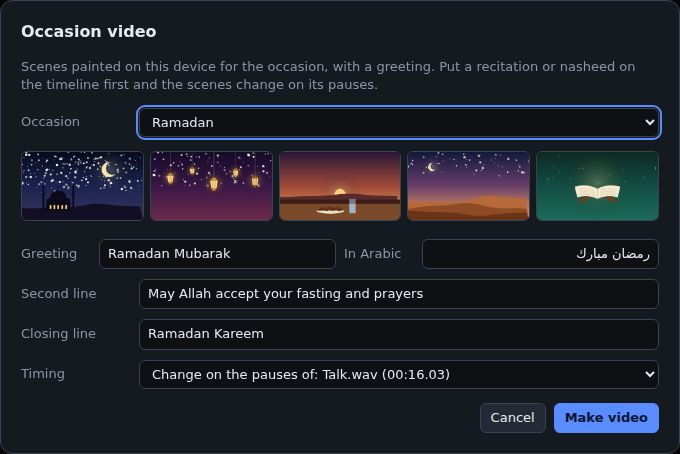
- Press Make video. The scenes go on a new track, changing on the pauses of the voice, with a slow zoom, crossfades and the greeting on top.
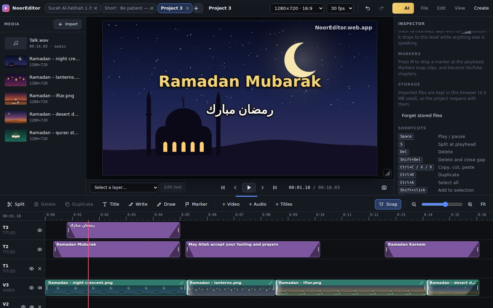
10. Read aloud: a voice-over from your text
Voices for English, Afaan Oromoo, Amharic, Somali, Swahili, Hausa, French, Indonesian and Turkish.
- Move the playhead to where the voice should start and open Create ▸ Read aloud.
- Choose the voice’s language and type or paste the text. Leave Also add each sentence as a caption ticked to get captions too.
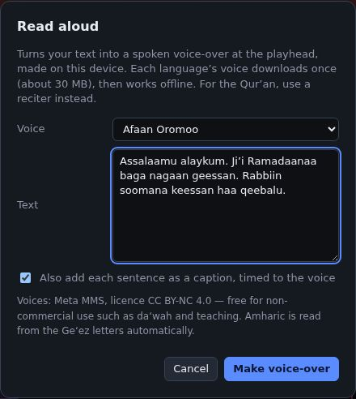
- Press Make voice-over. The first time, the voice for that language downloads (about 30 MB); after that it works offline. The voice-over goes on an audio track and each sentence becomes a caption that appears exactly while it is spoken.
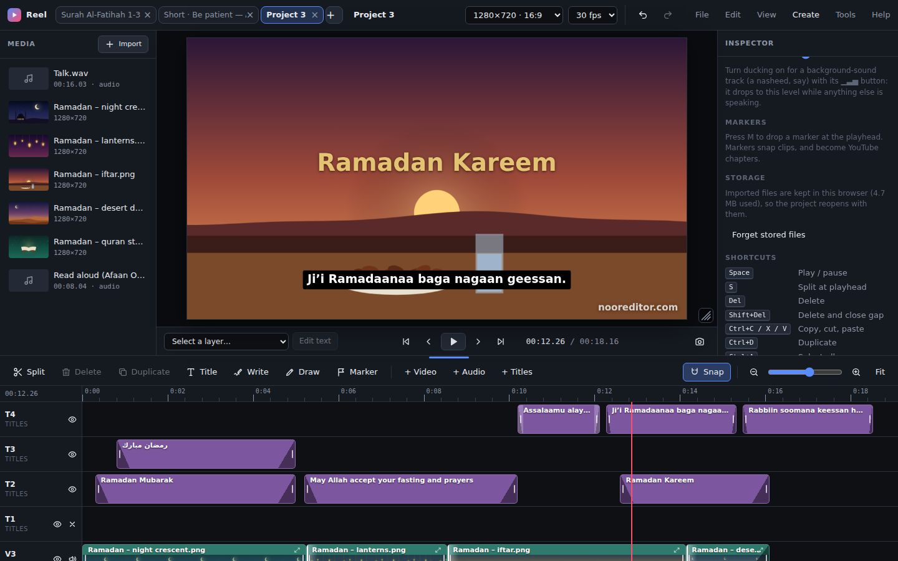
The voices are Meta’s MMS voices, made on your device. Their licence (CC BY-NC 4.0) allows non-commercial use such as teaching and da‘wah. Amharic is read from the Ge‘ez letters automatically. If a language’s voice cannot be downloaded, the editor says so — record your own voice instead. Do not use it for the Qur’ān: choose a reciter in the Qur’ān tool.
11. A Qur’ān video with a new background each āyah
- Open Create ▸ Qur’ān verse video and choose the sūrah, āyāt, reciter and translation as usual.
- Under Background, choose one of A new background each āyah: painted scenes (Nature, Jumu‘ah, Ramadan, Laylat al-Qadr or Hajj), or My photos if you have imported two or more pictures.
- Press Make video. The title card gets one picture and each āyah the next, changing with a crossfade exactly where the reciter starts the āyah.
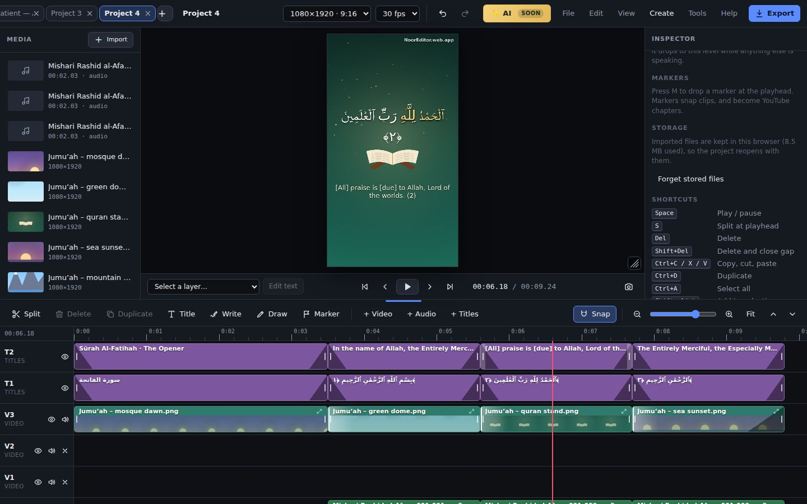
12. Keep the speaker in a tall Short (auto-reframe)
- Make a Short (Create ▸ Make a Short) with Fill the tall frame — Follow the speaker’s face is ticked for you — or, for any tall or square project with a wide video, open Tools ▸ Auto-reframe — follow the face.
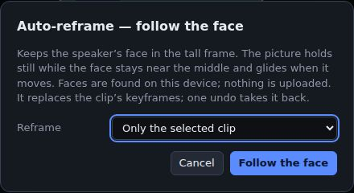
- Press Follow the face. The editor looks through the video, finds the face, and adds keyframes so the picture glides to keep it in the middle — holding still while the speaker stays near the centre.
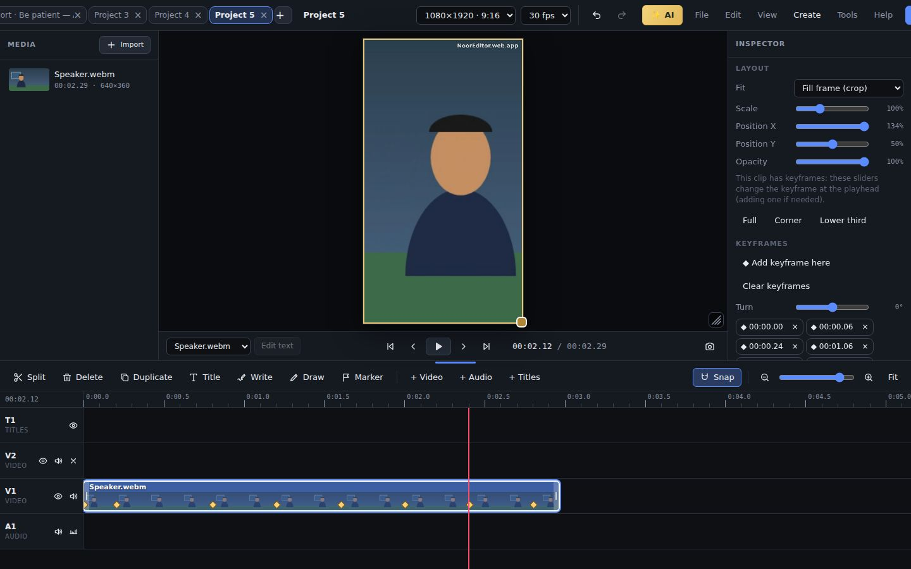
Faces are found on your device: with the browser’s face detector, or Google’s MediaPipe detector (downloaded once, about 1 MB). Without the internet it estimates from skin colour, which can be fooled by wood, sand or beige walls — check the result and drag Position X where needed. Undo takes it all back.
13. Editing on your phone
- Everything fits on the screen: + at the top is the Create menu, ☰ holds File, Edit, View, Tools and Help, the folder shows your media, the sliders show the details of what you selected, and the arrow is Export.
- The picture takes only the room it needs, and the rest is timeline. Pinch the timeline with two fingers to zoom it, and drag the blue bar to give the picture or the timeline more room.
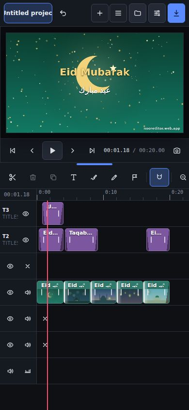
- Menus open as a sheet from the bottom of the screen with big buttons; tap outside to close.
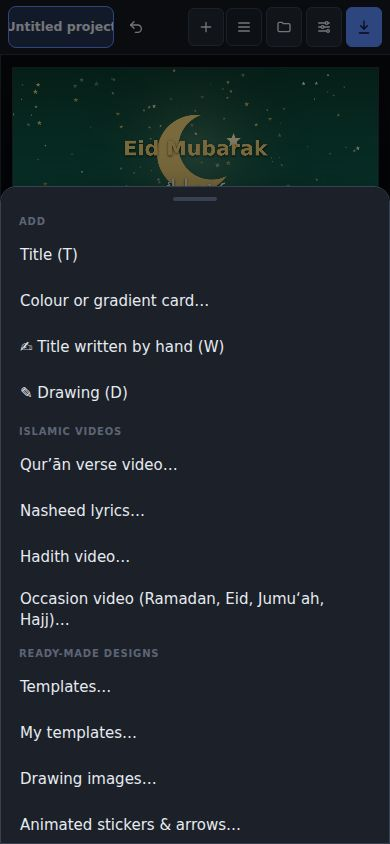
Cutting and arranging
- Move a clip by dragging it, also onto another track of the same kind. Clips snap to edges, markers and the playhead (turn off with Snap).
- Trim by dragging either end of a clip.
- Split at the playhead with S. Delete with Del; Shift+Del also closes the gap.
- Several clips at once: Shift- or Ctrl-click to select more, then drag them together, delete them, or copy and paste (Ctrl+C, Ctrl+V pastes at the playhead).
- Speed: select a video or audio clip and pick a speed from ¼× to 4×. Voices keep their pitch.
- Freeze frame: put the playhead on a video and press F. The frame is held for 2 seconds; drag its end to hold it longer.
- Transitions: when two clips touch on a track, select the second one and choose a transition — crossfade, dip to black, slide, push, wipe or zoom. Edit ▸ Transition on every cut does all of them at once.
- Markers: press M to mark a moment. Drag markers on the ruler, double-click to rename. Edit ▸ Copy chapters for YouTube turns them into chapter lines for the video description.
- Undo anything with Ctrl+Z.
On a phone or tablet, drag with one finger to scroll the timeline, tap to move the playhead, and pinch to zoom.
Layers, motion and colour
- Upper video tracks are drawn over lower ones. Use Scale and Position, or the Corner preset, for picture-in-picture.
- Pan & zoom slowly moves across a photo or video (the “Ken Burns” effect).
- Bars ▸ Blurred copy fills the empty sides with a blurred copy of the picture — the usual way to show a landscape video in a vertical frame.
- Colour: brightness, contrast, saturation, greyscale, sepia, hue and blur, plus fade in and out.
Animation
- Titles have many entrances under Animation ▸ Entrance: fade, rise, pop, slide from either side, drop with a bounce, zoom in or out, spin, flip, blur in, bounce and swing — as well as typewriter, word by word and handwriting.
- Pictures, videos, drawings and stickers have their own Entrance under Animation, with the same movements.
- Everything can also leave with an Exit: fade out, shrink away, grow and fade, sink, slide out, spin out, flip out, blur out or pop out. Set how long each takes.
- A photo you put on the timeline starts animated: it fades in and slowly zooms. Change or turn this off under Animation and Motion.
Keyframes
Keyframes animate anything — a title, a photo, a video, a drawing or a sticker — from one moment to another. Select the clip and use Keyframes in the panel on the right:
- Move the playhead to where the movement starts and press ◆ Add keyframe here.
- Move the playhead later and change Position, Scale, Opacity (under Layout) or Turn. A second keyframe is added there.
- Play: the clip moves smoothly between the keyframes. Add as many as you like.
Keyframes show as small diamonds on the clip. Click one in the list to go to it, or × to delete it. Quick animation sets up a ready-made movement — move across, float up, grow, spin, swing or fly across. Dragging a keyframed clip in the preview moves its whole path.
Effects
Select a picture or video clip; its effects are in the panel on the right. Clips with effects show an fx badge on the timeline.
- Look gives a clip a ready-made style in one step — Warm, Cool, Golden hour, Vintage, Black & white, Vivid, Faded, Dramatic or Night — setting its colour, tint, vignette and grain. Adjust any of them afterwards. With several clips selected, the look is applied to all of them.
- Transform: mirror left to right or flip upside down, rotate, and crop any edge; the cropped picture fills the frame again.
- Frame: rounded corners, a coloured border and a drop shadow — scale a clip down under Layout first for a neat picture-in-picture.
- Hide an area blurs, pixelates or covers a rectangle or oval of the picture, such as a face, a number plate or an image that should not be shown. Move and size it with the sliders; a dashed outline shows it while the clip is selected.
- Create ▸ Colour or gradient card adds a plain or gradient background at the playhead, for a title card or a pause.
Titles, Arabic and animation
Press T (or Title) to add a title at the playhead, then type in the panel on the right (on a phone it opens below the preview). Arabic text is laid out right to left automatically; choose an Arabic font — Amiri, Scheherazade New, Noto Naskh Arabic, Reem Kufi or Cairo — for the best result. Entrance animates a title: fade, rise, pop, slide, typewriter, word by word or handwriting.
The quickest way is the Write button beside Title under the preview (or W): it adds a title that a hand writes out — type your words and press Play. For a title you already have, click it on the timeline: ✍ Write by hand, just under the text box, makes a hand holding a pen write the title out, from the start of the line — the right for Arabic. ⌨ Type with hand types it letter by letter with a tapping finger. Once the title is complete, the hand moves away. A hand works with the Handwriting, Typewriter and Word by word entrances. Under Hand you can change the following:
- Hand: a pen, a pencil, a typing finger, or no hand;
- Hand style: Realistic · black pen (the default), a photographic hand following the letter strokes; Emoji ✍️, a rounded hand like the writing-hand emoji, or Sketch, an outlined drawing;
- Skin (illustrated styles): emoji yellow, four skin colours, or black-and-white line art;
- Hand size: from 20% to 400%, with Small, Reset size and Large buttons;
- Pen colour (illustrated styles): the same as the text, or any colour you choose. The realistic hand holds a black pen; its ink follows your text colour. Write time controls how quickly a title is written.
The title styles — Big title, Lower-third bar, Subtitle, Quote and Verse — set font, size, place and box in one click. Outline draws a coloured edge round the letters so they stay readable over a busy picture.
Templates, transitions and nasheed lyrics
The buttons above the preview open six editable templates, a gallery of ten transitions, and original English and Arabic nasheed verses. Templates append to your timeline and preserve existing clips. Select any title to edit it. Nasheed lyrics can highlight each word, fade in, or be written by hand. Add your own vocal recording for sound; fit-to-audio uses even timing that you can adjust on the timeline. No songs are included.
Voice recording and personal templates
Create ▸ Record your voice opens the microphone recorder. Press Record, allow microphone access, then Stop to listen back before adding the take. Each take can last up to five minutes. Use headphones when playing the timeline while recording.
Create ▸ Sync lyrics to vocals matches a vocal clip to the text on a lyrics track with the existing on-device speech recogniser. A speech model downloads on first use. It creates a new timed track, including word highlighting, and hides the original. Check the result by listening, especially for singing. Low-confidence matches are rejected instead of guessing. Undo restores the original.
Create ▸ My templates saves the current project with its media in this browser, up to 150 MB per template. Use adds a saved template to the end of your timeline. Templates are specific to this device and browser and are removed if site data is cleared.
Stickers, resizing and backgrounds
Create ▸ Animated stickers adds about fifty animated stickers: arrows, highlight rings, stars, checks, hearts, crescents and stars, sparkles, books, a closed mushaf, lanterns, masjids, minarets, the Kaaba, an eight-point star, a camel, a tent, a glass of tea, dates, a qibla compass, a calendar, a clock, a microphone, a speech bubble, a light bulb, a trophy, a location pin, a bell, thumbs up, a play button, balloons and more. Choose colour, motion (pop, pulse, float, wiggle, bounce, spin, swing or drift), rotation, size, position and duration. Select a sticker and use Edit sticker / arrow to change it.
Resize provides WhatsApp Status / Reels (9:16), YouTube (16:9), Instagram square (1:1) and portrait (4:5). Choose blurred fit, plain fit or crop. Timing stays unchanged. Check text and sticker positions after resizing. Undo returns to the previous format.
Select a photo or video and choose Background. Auto removal keeps people; Green / blue screen removes a chosen colour with tolerance and edge controls. Keep the cutout transparent to reveal a lower video track, or fill with a colour. Auto mode downloads Google's MediaPipe person model once and processes locally. Fine hair and fast motion may need correction. Processing uses up to 1280 pixels on the long edge and can slow down video playback or export on phones.
Templates also includes Ramadan reflections, Eid greetings, Islamic class invitations and lesson introductions, with editable titles and animated decorations.
Drawing
Press D (or Draw) to draw on the picture at the playhead. You get these tools:
- Pen and Highlighter for freehand lines, and Line, Arrow, Box and Circle, which you drag out;
- a colour and four thicknesses;
- Eraser, which rubs out whole strokes, and Undo (Ctrl+Z) and Clear.
The drawing appears on the timeline, on a titles track at the playhead, as soon as you draw the first line (if that spot is taken, the editor adds a new titles track). Press Done to keep it, or Play (Space) to keep it and watch the hand draw it straight away. Cancel or Esc closes the board and takes the drawing away again.
When the drawing plays, a hand holding a pencil draws it, stroke by stroke and in the order you drew them, like a whiteboard video. The pencil changes colour to match each stroke, unless you choose its colour under Pencil colour; the hand's style, skin and size can be changed as for titles. In the panel on the right you can do the following:
- set the Drawing time;
- switch to a pen or no hand, or change the skin colour and size;
- have the drawing simply fade in instead;
- move it and change its size under Layout.
Double-click the drawing, or press Edit drawing, to draw more on it or rub parts out.
Brand kit
Create ▸ Brand kit keeps your name, logo, colours, font and intro and outro words in this browser. Press Save and apply to put them on the current video:
- your logo in a corner of every frame;
- all titles in your font and colours;
- a 3-second intro at the start (everything else moves later);
- a 4-second outro at the end.
It is one undo step. Templates and Shorts can use the kit too: tick Use my brand kit.
Shorts
Create ▸ Make a Short turns part of a longer video — the best minute of a lecture, say — into a vertical 9:16 video for YouTube Shorts, Reels, TikTok or WhatsApp Status. Choose where it starts and ends (it starts from the selected clip or the playhead), add a big title, and choose whether to fill the tall frame or fit the picture with a blurred background. You can add a progress bar, a “Follow for more” end card and your brand kit, and then make captions from the speech. The Short opens in a new tab; your original video is not changed.
Qur’ān verse videos
Press ﴿ ﴾ Qur’ān video. Choose the surah, the ayat, a reciter and a translation, and the editor makes the whole video:
- each ayah’s recitation, one after another;
- the Arabic of each ayah on screen for exactly as long as it is recited, with its number ﴿١﴾;
- the translation beneath it, timed the same;
- a surah title card and Bismillah, and a background — a gradient, or your own picture or video.
Highlight each word as it is recited lights up the Arabic word by word in gold as the reciter reads, using Quran.com’s word timings where the reciter has them and the length of each word otherwise. Choose from Quran.com’s reciters or the extra reciters from EveryAyah, and from every translation in more than thirty languages, including Afaan Oromoo, Amharic, Somali, Hausa and Swahili.
Everything it adds is ordinary clips: change the font, colours or timing, add your own intro, then export. It is one step to undo.
Text, translations and recitations come from Quran.com. If the recitation cannot be downloaded, you can import a recitation file yourself and choose it under Your own recitation — the verses are then spread across it by length and you can adjust them — or make the captions alone.
Pictures on the pauses and jump cuts
Create ▸ Pictures on the pauses & jump cuts listens to a recitation, talk or nasheed, finds its pauses, and then:
- Pictures on the pauses — puts the photos you tick on a new track, a new one in each pause, with a transition and a slow zoom.
- Cut this clip at the pauses — splits it into pieces you can move, delete or put effects on.
- Remove the pauses — takes the quiet out and closes it up (jump cuts), keeping a little quiet each side so words are not cut. Everything later on the timeline moves up with it.
- Markers at the pauses.
Sensitivity finds more or fewer pauses, Shortest pause ignores short breaths, and Shortest scene stops the pictures changing too quickly. It all happens on your device, and one undo puts it back. See the tutorial.
Sound and ducking
- Set each clip’s volume (up to 200%) and fades, or mute it. Tracks have their own mute buttons.
- Normalise loudness sets a clip’s volume so its loudest moment is just below the maximum — handy for quiet phone recordings.
- Detach audio moves a video’s sound to its own clip, so you can cut or move it separately.
- Ducking: press the ▁▃▅ button on a background-sound track, such as a nasheed. It then goes quieter by itself whenever someone is speaking on another track, and comes back up afterwards. Set how quiet in the project panel (click an empty part of the timeline).
- Clean up voice removes background noise from a clip’s sound with a small speech-trained neural network — the same one the audio editor uses. The original is kept.
- Edit in audio editor opens a clip’s sound in the site’s audio editor. There, File ▸ Send to Video Editor brings the result back.
Sound library
Create ▸ Sound library has nature sounds — rain, gentle wind, ocean waves, a flowing stream, birds, crickets at night and a crackling fire — and sound effects: whoosh, riser, pop, click, ding, success, typing, page turn, heartbeat, camera shutter, water drop, boom and tick-tock. There is no music and no instruments; every sound is made on your device. Press ▶ Listen to hear one and Add to put it at the playhead. Nature sounds can be 15 seconds to 2 minutes long, and start quieter so a voice stays clear.
Recording your screen and camera
Create ▸ Record screen & camera records your screen with your camera in a round or rounded bubble in a corner — ideal for lessons and tutorials — or only the screen, or only the camera, with your microphone. Choose the corner, shape, size and ring colour, then press Start recording. After a 3-2-1 countdown a bar shows the time, with Pause and Stop. When you stop, the recording is added to your media and the end of the timeline. It never leaves your device. Recording the screen works on computers; phones can record the camera.
Captions and subtitles
- Tools ▸ Auto captions listens to the sound with Whisper, on this device, and writes captions onto a new track. The speech model downloads the first time (40–250 MB). For Amharic and Somali it picks the most accurate model, which works best for them.
- Afaan Oromoo (and any language): choose Afaan Oromoo in Auto captions, or use Tools ▸ Timed captions from your text. Paste what is said — one line per caption — and the words are timed to the voice by its pauses. See the tutorial.
- Tools ▸ Import subtitles reads an .srt or .vtt file.
- Tools ▸ Save a titles track as subtitles writes any titles track as .srt or .vtt, for uploading beside the video.
My projects
File ▸ My projects shows every project you have worked on in this browser, with a picture of it, its length and when it was last changed. Open one in a tab, make a copy with Duplicate, or Delete it. Their media files stay stored, so they open ready to edit. To move a project to another computer, use Save and keep its media files with it.
Workspace and tabs
- View makes the preview small, medium or large, expands it to fill the window (Esc or Restore workspace to come back), and hides or shows the side panels.
- Drag the edges of the video area left or right to make the side panels narrower or wider, drag the bar above the timeline up or down, or drag the grip in the video's bottom-right corner to make the whole video area bigger or smaller. The editor remembers the sizes.
- Tabs: the + next to the project name at the top opens another project in a new tab, so you can work on up to five videos at the same time. Each tab has its own timeline, media and undo history, and all of them are kept in this browser. Click a tab to switch, or × to close it.
Export
Fast formats render every frame exactly and usually finish quicker than the video plays; you can switch to another tab while they work. Real time formats play the project through once and need the tab in front — use them only if your browser offers no fast format. Chrome, Edge and Safari make MP4; Firefox makes WebM. The camera button under the preview saves the current frame as a picture.
Sharing
When an export finishes, Share video…, WhatsApp and Telegram appear next to the download link. On phones (and Chrome or Edge on a computer) the video itself is sent to the app you choose. Elsewhere WhatsApp or Telegram opens with a message, and you attach the downloaded file there.
Saving and reopening
Your project is saved in this browser as you work, together with copies of the files you imported, so it opens again just as you left it. File ▸ Save as a file downloads the project as a small .reel.json file (without the media) to keep or move to another computer; open it there and import the same files again. The editor also works offline once it has been opened.
Watermark
Videos show a small nooreditor.com mark in the bottom-right corner, in the preview and in exported files. To remove it, untick Add the nooreditor.com watermark in the Export window, or click an empty part of the timeline and untick it under Watermark.
About
Help ▸ About shows the version, who made the editor, how to get in touch, and the free software it is built on.
Keyboard shortcuts
| Space | Play / pause |
| S | Split at the playhead |
| Del · Shift+Del | Delete · delete and close the gap |
| Ctrl+C / X / V | Copy, cut, paste at the playhead |
| Ctrl+D | Duplicate |
| Ctrl+A | Select all clips |
| T · W · D | Add a title · a title written by hand · draw |
| M · F | Add a marker · freeze frame |
| ← → | One frame back or forward (Shift: one second; Alt: nudge the selected clips) |
| Home · End | Start · end |
| Ctrl+Z · Ctrl+Shift+Z | Undo · redo |
| + − · Ctrl+wheel | Zoom the timeline |